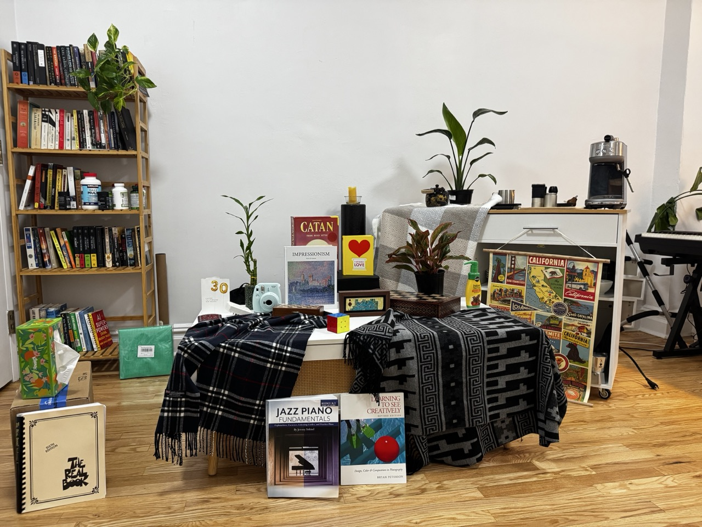
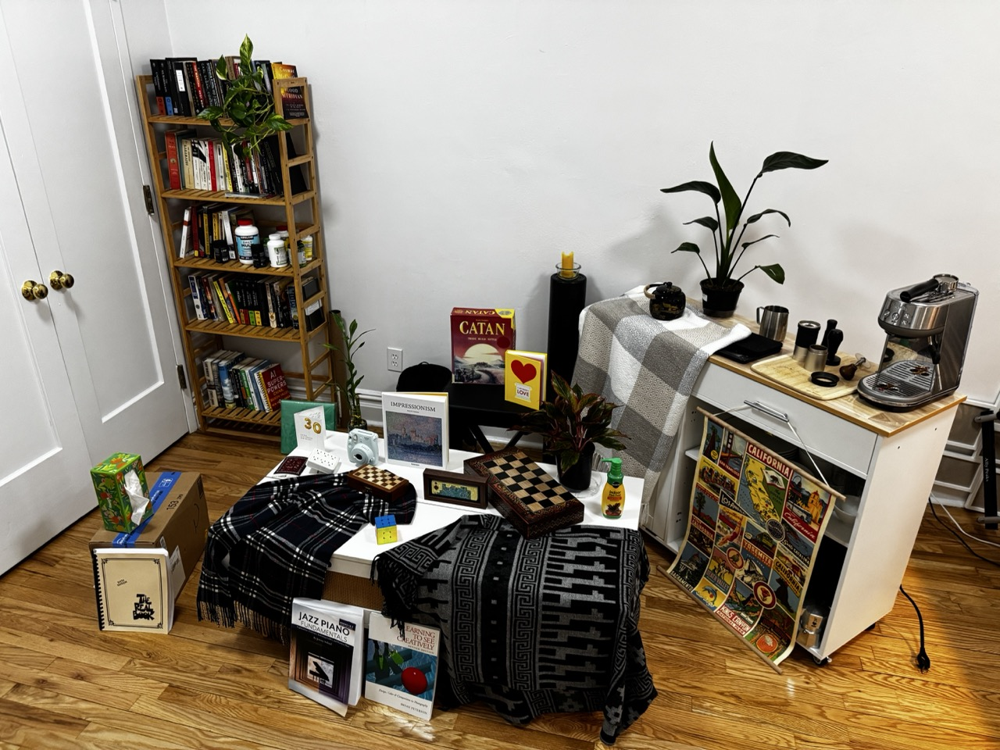
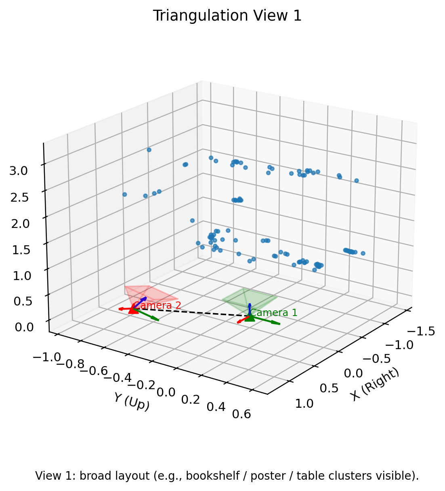
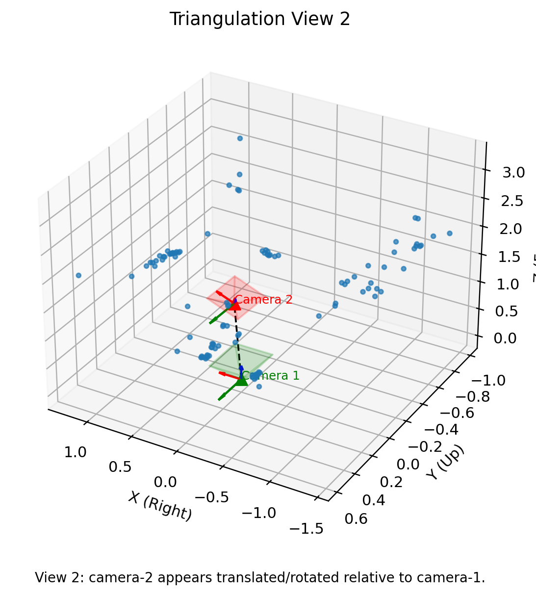
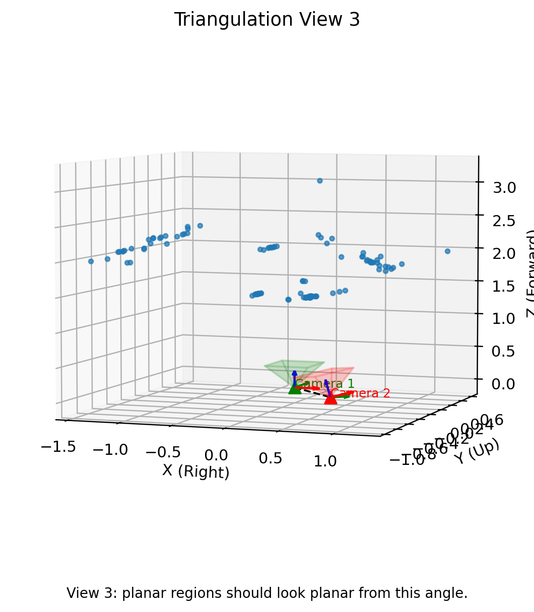

Image 1
Reference view used for intrinsics, features, and color mapping of triangulated points.
Complete deliverables overview from input images to triangulated scene and grounded Viser screenshot captions.
Artifacts generated and included in this showcase page.

Reference view used for intrinsics, features, and color mapping of triangulated points.

Second view used for matching, pose recovery, and two-view triangulation.
Intrinsic matrix computed from camera metadata and image size in the notebook.
optical_focal_length_mm = 6.765, sensor_width_mm = 9.757, sensor_height_mm = 7.318, image_size = 1280×960 px.
Detected SIFT keypoints overlaid on both input images using the configured detector parameters.

Red points show detected local features used for matching in Step 3.
Saved visual diagnostics for descriptor matching quality before geometric verification.

Distribution of d1/d2 ratio values used for match filtering in Step 3.

Best descriptor matches by lowest NNDR, shown with 1st and 2nd nearest neighbors.

All tentative correspondences after NNDR filtering, before inlier/outlier rejection.
Geometric verification outputs after Essential Matrix RANSAC, including inlier visualization and convergence.
RANSAC parameters used:

Feature correspondences retained as inliers after Essential Matrix RANSAC.

Best inlier count over iterations (generated when Step 4 runs with the updated RANSAC output history).

Wide layout view showing relative scene clusters and camera framing.

Pose-consistency view highlighting recovered camera-2 placement.

Planarity-check perspective for flattened scene regions.
Short captions generated from screenshot image content and scene geometry.

... moderate detail; scene is well centered in frame. I see bookshelf, poster, coffee table.

... camera 2 appears right, lower and forward; pose looks consistent. I see camera 2 shifted top-right.

... structure looks more volumetric; scene sits compactly in frame. I see poster plane.